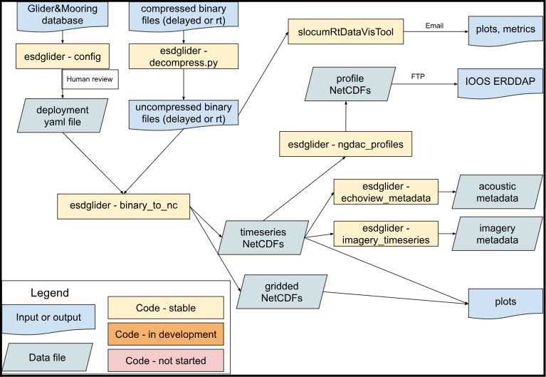

Glider Data
There are many steps and flavors to glider data processing, from the base processing (binary glider to NetCDF files for Slocum gliders), to QA/QC, to developing additional data products. This page outlines the ESD glider lab’s data processing workflow, and in particular base processing and data products.
Users interested in understanding and accessing data products created for each deployment should see the Data Products section. For acoustic or image processing workflows, see the acoustics and imagery pages, respectively.
Background
Historically, the ESD glider team has processed glider data using the Matlab toolbox SOCIB. However, this toolbox is not actively maintained, and the majority of ESD processing efforts have moved to Google Cloud (GCP) where Matlab is difficult to run. Subsequent efforts involved developing amlr-gliders, which contained a Python toolbox and scripts that were primarily wrappers around gdm. These efforts never caught full traction.
Currently, the ESD glider lab uses the esdglider Python package, which can be found in the glider-utils repo, to do its base glider data processing. esdglider primarily consists of ESD-specific wrappers around existing toolboxes such as PyGlider, GliderTools, and dbdreader. All efforts are geared towards processing ESD glider data in ESD’s Google Cloud project, using an Open Science approach.
Terminology
Common terminology used in glider data processing:
Inflection: when a glider is transitioning from a dive to a climb, or from a climb to a dive
Base Processing
The base glider data processing, also referred to as “Level 1” processing, is primarily done using PyGlider, hereafter simply ‘pyglider’. Pyglider creates creates timeseries and gridded CF-compliant NetCDF files, which can be both used internally in further workflows, as well as made publicly available through an ERDDAP (e.g., via the NGDAC).

Data Products
The esdglider package uses pyglider to create several different data products as part of the base processing, which are described here. All output files begin with the deployment name (‘glider-YYYYmmdd’), and include the data processing ‘mode’ (i.e., delayed or rt).
NetCDF files
The timeseries data products are all NetCDF files with a single coordinate “time”. The gridded data products are all NetCDF files with two coordinates: “depth” and “profile” (i.e., profile_index).
{glider-YYYYmmdd}-{mode}-sci.nc: The ‘science’ timeseries. Most users will want this dataset, as it contains the values from all of the various science sensors. Functionally speaking, this timeseries has one ‘row’ of data for each timestamp from the glider’s science computer where a CTD temperature value was recorded. All included sensor values are interpolated to all timestamps, as long as there is not a gap of 300 or more seconds. The sensor values included in this dataset depend on the instruments carried by the glider; … (Todo: add a section that lists the sensor values for each instrument). Users should note that the ‘depth’ value in this timeseries is the depth calculated from the CTD pressure sensor.
{glider-YYYYmmdd}-{mode}-eng.nc: The ‘engineering’ timeseries. Functionally speaking, this timeseries has one ‘row’ of data for each timestamp from the glider’s flight computer where an m_depth value was recorded. All included sensor values are interpolated to all timestamps, as long as there is not a gap of 300 or more seconds. In addition to m_depth, it contains sensor values such as m_roll, m_pitch, and m_gps_lon. See the full list of sensor values here. Users should note that the ‘depth’ value in this timeseries is from m_depth, meaning the measured depth from the glider.
{glider-YYYYmmdd}-{mode}-raw.nc: The ‘raw’ timeseries. This timeseries contains a timestamp for every time recorded by the glider’s flight or science computer, and no interpolation is done for any sensor values. These two features make this dataset useful for a) calculating profiles and b) troubleshooting any sensor values or processing steps. This dataset contains both the measured depth (“depth”) and the depth calculated from the CTD pressure sensor (“depth_ctd”).
{glider-YYYYmmdd}_grid-{mode}-1m.nc: The science timeseries, gridded into one meter bins. This NetCDF file will include all of the science sensor values that were in the science timeseries.
{glider-YYYYmmdd}_grid-{mode}-5m.nc: The science timeseries, gridded into five meter bins. This NetCDF file will include all of the science sensor values that were in the science timeseries.
Other
{glider-YYYYmmdd}-{mode}-profiles.csv: A CSV file with one row for each profile, containing information such as: profile index, profile start and end time, profile start and end depth, and profile direction. Note that this file contains “#.5” profiles, meaning time between profiles when the glider is at the surface or inflecting at depth.
{glider-YYYYmmdd}-imagery-metadata.csv: A CSV file with one row for each image, and one column for each desired sensor value. The sensor values are interpolated to each image timestamp
Acoustic metadata files: Files needed for processing acoustic data with Echoview. These files are described on the acoustics page.
Timeseries
See data products for a description of the timeseries output files. Current workflow (also shown above):
- Upload binary and cache files into Deployment GCS bucket, as specified here
- Run this script locally to create a deployment YAML file. This script pulls all instrument information from the Glider Database. A user needs to then check this script by hand, in particular the people, comment, and summary blocks, and then commit to the glider-lab repo.
- Create a deployment-specific script, and run it in a GCP Workbench Instance.
- Access processed NetCDF files via GCP for additional internal workflows
Processing Notes
SMW - to update
This section describes the choices made by the code when processing binary glider files. This may be useful reference for folks using pyglider/dbdreader for any purpose.
The pyglider.slocum.binary_to_timeseries function uses dbdreader to read slocum glider data from binary files. More discussion can be found here around why pyglider switched to using dbdreader, and how pyglider processing worked before.
As constructed, binary_to_timeseries uses dbdreader’s get_sync to extract values for all of the specified sensors. Thus, the user specifies a particular sensor to server as the ‘time_base’, and then all other desired variables (across science and engineering: pressure, temperature, oxygen, roll, etc.) are interpolated onto the same time base (i.e., the timestamps where this ‘time_base’ variable has a valid (not missing/nan) value). This makes life difficult if different sensors have different sampling strategies, and does not allow users to extract non-interpolated data. Adding a ‘union’ behavior option is currently under discussion in this issue and this pull request. For now, binary_to_nc.py generates several datasets, and merges them together soa s to have all variables/relevant timestamps in one file.
Data alterations, or additional features of note:
- dbdreader:
- dbdreader throws an error if a sensor is turned off and thus not present in some sbd/tbd or dbd/ebd files. For example, if the oxygen sensor is turned off halfway through a deployment, although this would apply to any sensor that is turned off. However, it looks like this behavior may be fixed soon.
- dbdreader by default skips the first line of each binary file. The reasoning is that “this line contains either nonsense values, or values that were read a long time ago. This behavior can be changed.” See here for more discussion.
- dbdreader only identifies sensors as ‘engineering’ or ‘science’. Thus, when extracting e.g. data for the sensor ‘sci_oxy4_oxygen’, dbdreader uses the ‘sci_m_present_time’ as the timestamp, rather than ‘sci_oxy4_present_time’.
- pyglider:
- Latitude and longitude values are set to nan if their absolute value is greater than 90 and 180, respectively.
- Any values of zero from science sensors are converted to nan.
- No other data alterations are made (e.g., CTD data is all read and left as-is).
Gridded
Docs in progress
NGDAC Profiles
Docs in progress
Other Files
Docs in progress
Real-Time Data
Currently, all ESD glider data processing is delayed-mode processing. The vision is to have GCP infrastructure in place to:
- Periodically rsync real-time data (sbd/tbd files) from the SFMC to GCP
- Run Caleb’s slocumRtDataVisTool to create plots and statistics useful for real-time piloting decisions
- Run the base processing steps on these data, and automatically send the processed files to the NGDAC
Future Directions
- qc + data cleaning -> cleaned netcdf files with qc flags. Potential resources:
- Implement IOOS QARTOD tests, eg using ioos_qc to add qc flags
- https://github.com/OceanGlidersCommunity/Realtime-QC
- https://github.com/castelao/CoTeDe
- other qc/data cleaning? For instance, sanity check ts plots. Likely will involve by-hand inspection for each deployment, including removing bad data if discovered
- Additional processing functionality, e.g. GliderTools:
- manuscript describing the GliderTools toolbox
- GliderTools contains tools for processing Seaglider basestation files. However, the rest of the tools simply require that the data be in an xarray dataset.
- optics, pq: quenching correction method described by Thomalla et al. (2018)
- additional qc tools?
- calculate cool physics things (mixed layer depth, …)
- leverage gridded plotting routines
GitHub Repos
See the home page for ESD-developed repos. External GitHub repos that are particularly relevant or useful:
| repo link | description |
|---|---|
| dbdreader | Extract data from slocum binary files |
| pyglider | Convert datafiles from slocum and seaexplorer into netcdf |
| GliderTools | Quality control and plot generic glider data |
| IOOS qc | Apply IOOS QARTOD and other qc routines |
| SOCIB | Process glider data in Matlab (not actively maintained) |
| glider tools list | OceanGliders community repository to list tools for processing glider data. Includes many of the tools listed above. |